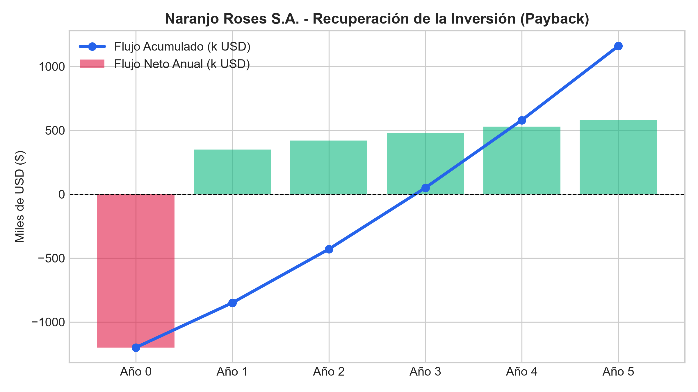
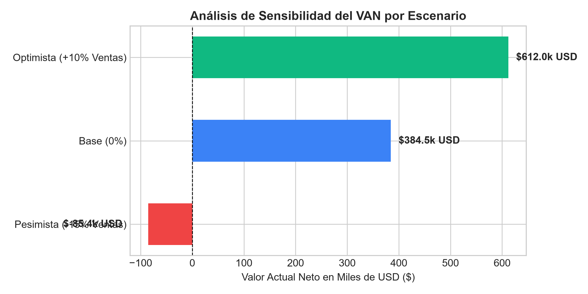

Proyecto: Naranjo Roses S.A.
Fecha: Julio 2026
Dashboard Interactivo: Ver Dashboard en Vercel (Reemplaza esta URL con tu enlace de Vercel)
1. Resumen Ejecutivo y Metodología
El presente estudio analiza la viabilidad financiera del proyecto de expansión de Naranjo Roses S.A. mediante el uso de herramientas automatizadas en Python y un modelo cuantitativo de flujos de caja descontados.
Principales Métricas Financieras
- Inversión Inicial: $1,200,000 USD
- Valor Actual Neto (VAN): $384,500 USD
- Tasa Interna de Retorno (TIR): 18.5%
- Periodo de Recuperación (Payback): 3.2 años
- Tasa de Descuento (WACC): 12.0%
2. Visualización de Resultados Financieros
Flujo de Caja y Recuperación de la Inversión

Análisis de Sensibilidad (VAN por Escenario)

3. Diagnóstico Financiero y Análisis de Escenarios
- Escenario Base: El proyecto genera un VAN positivo significativo ($384.5k USD) con una TIR superior al costo de capital (18.5% vs 12.0%), demostrando sólida rentabilidad.
- Escenario Pesimista (-15% Ventas): El VAN cae a -$85.4k USD, identificando el volumen de ventas como la variable crítica de riesgo.
- Escenario Optimista (+10% Ventas): El VAN alcanza $612.0k USD, evidenciando un alto apalancamiento operativo positivo.
4. Estrategias de Mitigación de Riesgos
- Diversificación de Mercados: Ampliar exportaciones hacia mercados emergentes para amortiguar caídas de demanda regional.
- Cobertura Cambiaria: Implementar instrumentos financieros para mitigar la volatilidad del tipo de cambio en insumos importados.
- Eficiencia en Costos Operativos: Automatizar procesos de postcosecha para reducir el costo variable unitario en un 5%.
5. Conclusiones y Recomendaciones
El proyecto de Naranjo Roses S.A. es financieramente viable y altamente recomendable bajo las condiciones del escenario base. Se sugiere proceder con la inversión manteniendo un monitoreo continuo sobre el volumen de ventas mediante el Dashboard interactivo implementado.